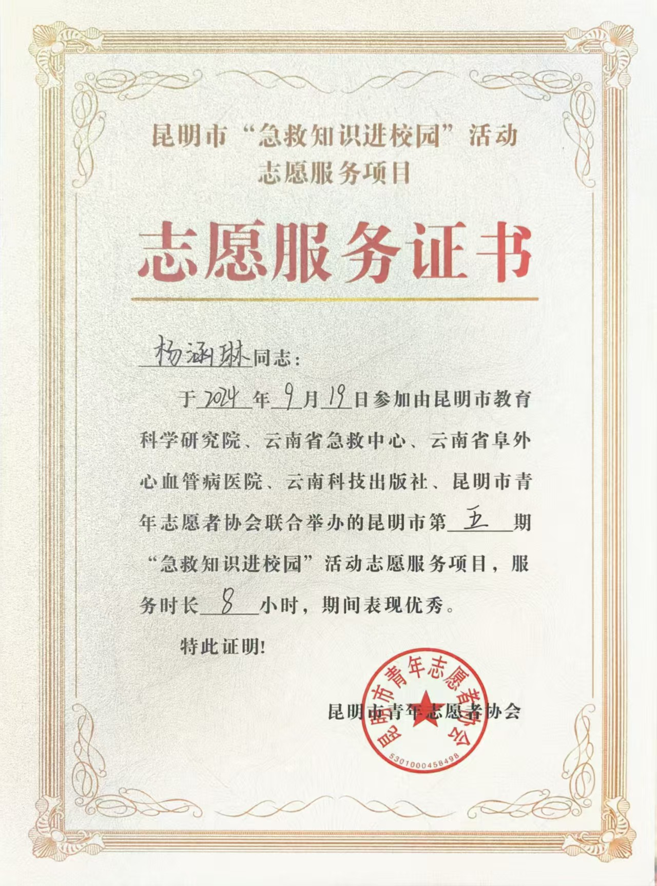

活动名称：昆明市第五期“急救知识进校园”活动志愿服务项目
主办单位：昆明市教育科学研究院、云南省急救中心、云南省阜外心血管病医院、云南科技出版社、昆明市青年志愿者协会（联合举办）
服务时长：8小时
作为志愿者，我参与了本次急救知识进校园活动的现场组织与协助教学工作。主要工作包括：
8小时的志愿服务不长，却让我真切感受到急救知识普及的紧迫性和意义。当看到一名初中生认真地在模拟人身上完成第一次标准胸外按压时，他眼睛里闪着光说“我学会了，以后能救人了”——那一刻我突然明白，志愿活动不是单向的付出，而是把一颗颗“敢救、会救”的种子埋进年轻人心底。作为大学生，能用课余时间为校园安全添一块砖，这份成就感比任何证书都珍贵。我也更加理解了“奉献、友爱、互助、进步”的志愿精神，未来会继续参与这类有意义的活动。